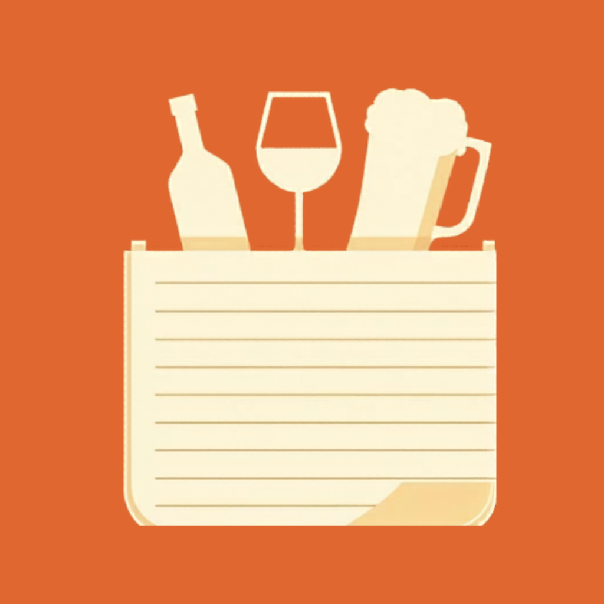
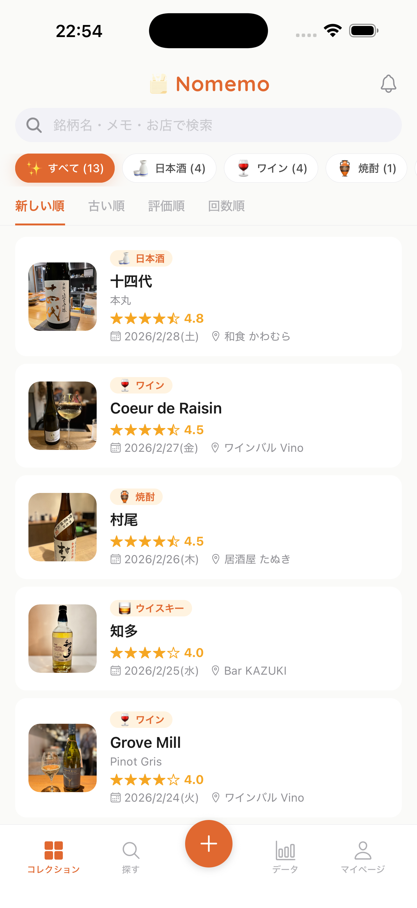
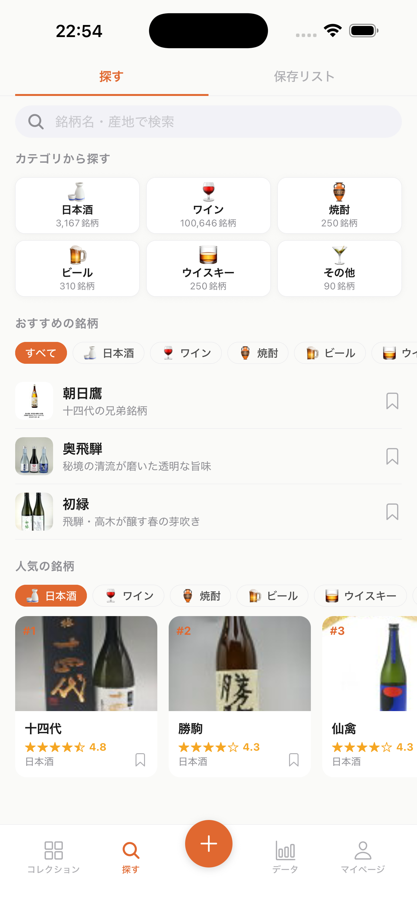
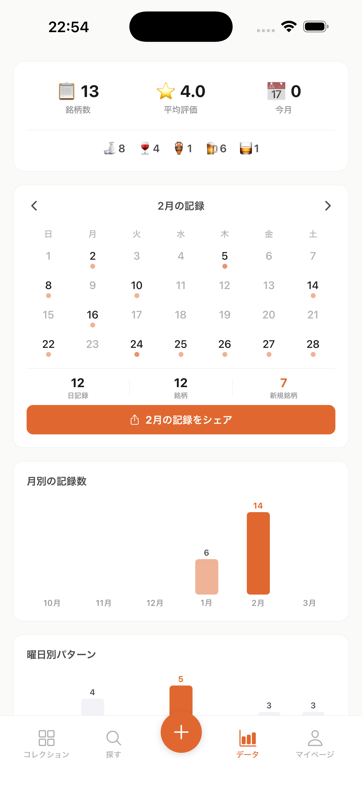
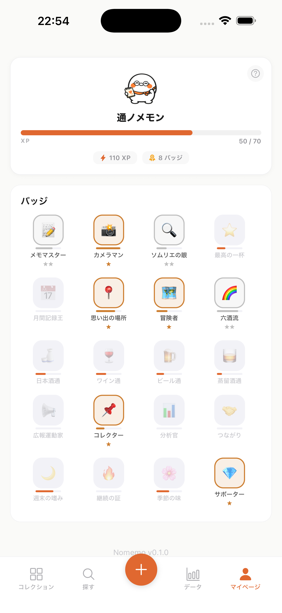
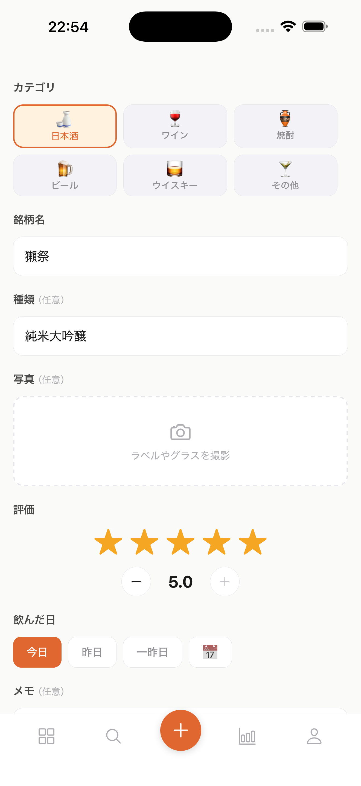

Nomemo飲んだお酒、もう忘れない。
酔っていても5秒で記録。日本酒・ワイン・ビール・焼酎・ウイスキー、10万銘柄対応の記録アプリ。
App Storeで無料ダウンロードiOS対応（Android近日公開）

できること
Nomemoは記録するだけのアプリではありません。あなたの好みを学び、次の一杯を提案します。
銘柄を選んで星をつけるだけ。写真やメモも追加できます。酔っていても大丈夫。
日本酒・ワイン・ビール・焼酎・ウイスキーの銘柄DBから即座に検索。産地名でも見つかります。
カレンダー、評価分布、曜日パターンなど、自分の飲酒傾向を可視化。
あなたの好みに合った銘柄をおすすめ。新しいお酒との出会いを演出します。
気になる銘柄をブックマーク。お店で迷った時にすぐ確認できます。
記録するたびにお酒の妖精「ノメモン」が成長。バッジ収集で記録がもっと楽しく。

探す

データ分析

ノメモン育成
対応カテゴリ
ジャンルごとにアプリを使い分ける必要はありません。その日飲んだお酒をそのまま記録。
こんな方に
飲んだその場で5秒記録。翌日「あれ美味しかったのに名前が...」がなくなります。
10万銘柄のデータベースから検索。外国語ラベルでもすぐに見つかります。Vinicaからの移行先としても。
星評価とメモで、どのビールが好みだったか一目瞭然。次のお店選びにも役立ちます。
記録が溜まるほど、あなたの好み傾向をデータで可視化。新しいお酒との出会いにつながります。
使い方
酔っていても迷いません。
日本酒・ワイン・ビール・焼酎・ウイスキーなどから、飲んだお酒のジャンルを選択。
10万銘柄のデータベースから瞬時に検索。産地や読みがなでも見つかります。
5段階で評価して保存。写真やメモも追加できます。これだけで記録完了。

他アプリとの違い
ジャンル特化アプリでは記録しきれない「今日飲んだ全部」を、ひとつのアプリで。
| Nomemo | Vivino | さけのわ | Untappd | |
|---|---|---|---|---|
| 日本酒 | ✓ | — | ✓ | — |
| ワイン | ✓ | ✓ | — | — |
| ビール | ✓ | — | — | ✓ |
| 焼酎 | ✓ | — | — | — |
| ウイスキー | ✓ | — | — | — |
| 日本語対応 | ✓ | — | ✓ | — |
| ゲーミフィケーション | ✓ | — | — | ✓ |
* 2026年4月時点の情報です。Vinicaは2025年10月にサービス終了しています。
よくある質問
iOS で無料ダウンロード
App Storeでダウンロード